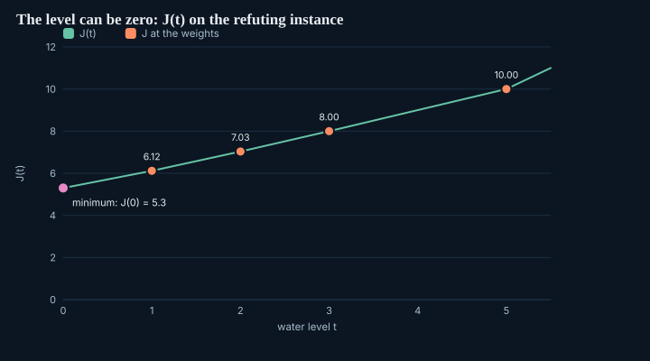

Chapter 28 — The Adversarial Observer
Every observer so far has been one the encoder works for. Chapter 24 added a second party, a holder that learns from the description without decoding it, but that holder is passive: it has a fixed map, it does not choose what to look at, and its gain is charged as a conditional mutual information (the leakage coordinate of secure source coding, Villard and Piantanida 2013, Ekrem and Ulukus 2013). This chapter reports the case in which the second party is an adversary. It reads the encoder’s own record through a read operator of rank at most $k$, it chooses that operator, and what it resolves becomes the encoder’s loss. The same record is also the instrument by which the encoder earns its value, so the encoder cannot simply stay silent.
The material is ledger row GO-16, and the row’s class cell is split. I give the split first, because every statement below carries one of its parts.
- Theorems 1 and 2 at their scope, and the measured discrete twin:
[predicted](ledger row GO-16, registrations 090 and 091). - Theorem 3 as sealed in registration 090:
[refuted](ledger row NEG-17, verification incident VI-30). - Theorem 3 as corrected: netted by
experiments/verify_go16_diagonal.py(9/9, run in continuous integration), ungoverned, and not re-registered (VI-30, VI-33, VI-35). It has no class of its own. - The campaign as a whole:
[exploratory], pending an operational face. Until 2026-11-21 the row’s status read “theorems netted”; VI-35 corrected that.
The disclosure game
A private type $X\sim\mathcal N(0,I_n)$ is known to the encoder. The encoder commits to a record
$$ A = FX + W,\qquad W\sim\mathcal N(0,\Sigma_w)\ \text{independent of } X, $$
with $F\in\mathbb R^{m\times n}$. A matrix $S\in\mathbb R^{m\times n}$ is the value-ideal policy, the record the encoder would keep if nobody were reading. (In this chapter $S$ is that matrix, following the row and the paper. It is not the holder of Chapter 24.) The value loss is
$$ L_{\mathrm{val}} = \lVert F-S\rVert_F^2 + \operatorname{tr}\Sigma_w . $$
The reader picks a read $\Theta$ of rank $k$ with $\Theta\Theta^\top=I_k$, observes $Y=\Theta A$, and exploits $Z=HX$. The leakage is the variance it resolves, $R(\Theta)=\operatorname{tr}\operatorname{Cov}(\mathbb E[Z\mid Y])$. With $N=FF^\top+\Sigma_w$ the record covariance and $\lambda>0$ the price of leakage, the encoder, committing first, minimizes
$$ J(F,\Sigma_w) = L_{\mathrm{val}} + \lambda\max_{\Theta}R(\Theta;F,\Sigma_w). $$
Write $M=H^\top H$ for the exploit weight and $\Sigma_S=S^\top S$ for the value weight. The reader’s best value is the sum of the $k$ largest eigenvalues of $G=N^{-1/2}FMF^\top N^{-1/2}$, by Ky Fan’s maximum principle (classical). I write $\lVert\cdot\rVert_{(k)}$ for that sum.
Theorem 1: leakage depends on the policy only through $K$
The revelation operator is
$$ K = F^\top N^{-1}F,\qquad \operatorname{Cov}(X\mid A)=I-K,\qquad 0\preceq K\preceq I . $$
Theorem 1 has three parts, [predicted] at their scope (ledger row GO-16,
registration 090; re-checked by the fresh-context audit VI-30, which found them
standing).
(i) The nonzero eigenvalues of $G$ and of $M^{1/2}KM^{1/2}$ coincide, so the leakage is $\lambda\lVert M^{1/2}KM^{1/2}\rVert_{(k)}$. Two policies with the same $K$ leak the same.
(ii) For $m\ge n$ and $S$ of full column rank, the least value cost of achieving a given $K$ is
$$ C(K)=\operatorname{tr}\big(S(I-K)S^\top\big), $$
attained by shrink-and-dither: $F^\star=SK$, $\Sigma_w^\star=SK(I-K)S^\top$, so
that $N^\star=SKS^\top$. The case $m
(iii) The game is therefore the convex semidefinite program
$$ \min_{0\preceq K\preceq I}\ \operatorname{tr}\big(\Sigma_S(I-K)\big) +\lambda\,\lVert M^{1/2}KM^{1/2}\rVert_{(k)} \;=\;\min_{0\preceq K\preceq I}\ \max_{W\in\mathcal W_k}\ \mathcal L(K,W), $$
with $\mathcal L(K,W)=\operatorname{tr}(\Sigma_S(I-K))+\lambda\operatorname{tr}(WM^{1/2}KM^{1/2})$ and $\mathcal W_k=\{0\preceq W\preceq I,\ \operatorname{tr}W=k\}$ the reader’s mixed attention operators. Both sets are compact and convex and $\mathcal L$ is bilinear, so a saddle point $(K^\ast,W^\ast)$ exists.
Attribution. Parametrizing a Gaussian disclosure game by the posterior covariance
and recasting it as a semidefinite program is imported machinery (Sayin, Akyol and
Başar; Tamura), and the operator theory of the sum of the largest eigenvalues is
classical (Fan; Overton and Womersley; Warmuth and Kuzmin). The novelty file
paper/GO16-NOVELTY-FLANK.md adds a restriction on wording: the objective in the
Sayin and Başar program is already linear in the posterior covariance, so “the cost
is linear in a covariance variable” is not claimable. What the row records as its own
is the identification of the least value cost of revelation $K$ with
$\operatorname{tr}(S(I-K)S^\top)$ in the game where the record is the payoff
instrument, with the shrink-and-dither attainment. The sweep behind this checked 16
citations against their primary pages: 13 verified, 2 corrected, 1 not verifiable at
its primary source (Tamura), which is carried with that caveat.
Dither, and three corrections. A noiseless record ($\Sigma_w=0$, $F$ of full row
rank) has $K$ idempotent: revelation is all or nothing in each direction. Fractional
revelation needs $\Sigma_w\ne0$. The row records this corollary’s history. Version 0.1 conjectured that the optimum never
dithers; that conjecture is refuted by the corollary. Version 0.2 then explained the
probe that had suggested it as an instrument artifact; the first fresh-context pass
(paper/GO16-R-IND-5-NOTES.md, finding 8) refuted that explanation, and a
measurement replaced it: the probe’s instances have optima that are close to
projections and need almost no dither. Version 0.3 went on to say that generic
instances whose weights do not commute behave the same way; that is contradicted by
the harness’s own random instance and is withdrawn (VI-30). All-or-nothing noiseless
Gaussian disclosure also has published instances (Sayin and Başar; arXiv:2602.19292).
Commitment. By part (iii), minimax equals maximin in the reduced game whose reader strategy is $W$, a reader who may condition its read on the encoder’s policy $(F,\Sigma_w)$. The first pass (finding 9) narrowed an earlier, wider claim to this game. VI-30 narrowed it again: conditioning on $N$ alone is not enough. The row’s body text still says “$N$-conditioned”; the row’s Notice says that text predates the audit. The game in which the reader commits to a mixture over fixed instruments $\Theta$ is a different game, treated under Theorem 6 below.
Theorem 2: the partition and the tie
Let $(K^\ast,W^\ast)$ be a saddle point, $G^\ast=M^{1/2}K^\ast M^{1/2}$ and
$\Delta^\ast=\lambda M^{1/2}W^\ast M^{1/2}-\Sigma_S$. Theorem 2 is [predicted] at
its scope (ledger row GO-16, registration 090; standing after VI-30).
(i) Pricing. $K^\ast$ minimizes the linear functional $\operatorname{tr}(K\Delta^\ast)$. On the negative eigenspace of $\Delta^\ast$, $K^\ast=I$: these directions are revealed. They are of two kinds, conceded (full attention is still priced below the value) and submerged (the reader ignores them). On the positive eigenspace, $K^\ast=0$: blacked out. Every eigenvector of $K^\ast$ with a fractional eigenvalue lies in $\ker\Delta^\ast$: contested, where the reader’s mixed attention prices revelation to exact encoder indifference, $\lambda M^{1/2}W^\ast M^{1/2}=\Sigma_S$.
(ii) Attention. $W^\ast$ maximizes $\operatorname{tr}(WG^\ast)$ over $\mathcal W_k$.
(iii) Tie. If $W^\ast$ has an eigenvalue strictly between 0 and 1 (the reader mixes), then $\lambda_k(G^\ast)=\lambda_{k+1}(G^\ast)$.
Part (iii) is one direction only. The tie has an ancestor in the coalescence of eigenvalues at optimizers of sums of largest eigenvalues (Overton and Womersley), and the equalization it resembles in poker, Blotto and security games is published folklore. The row records the partition with indifference pricing as its own.
Theorem 3: what was sealed is false, and what replaced it
The refutation comes first. Registration 090 sealed, as part of Theorem 3, that
in the diagonal game the water level sits at one of the weights $\mu_j$ and that the
tie $\lambda_k(G^\ast)=\lambda_{k+1}(G^\ast)$ holds if and only if the contested set
is nonempty. That statement is [refuted] (ledger row NEG-17). It is false on an
open set of the parameters its own hypotheses allow. A fresh-context re-check three
months after the seal (VI-30, 2026-11-20) found the missing case: the level can be
zero. The witness is $\mu=(5,3,2,1)$, $s^2=(10,0.1,0.1,0.1)$, $\lambda=1$, $k=2$.
There $J(0)=5.3$ is below the value at every $\mu_j$, the optimum is
$K^\ast=\operatorname{diag}(1,0,0,0)$, and the tie holds at zero,
$\lambda_2=\lambda_3=0$, with no contested coordinate. It was confirmed two ways, from
the paper’s own function $J(t)$ and by brute force over $\rho\in[0,1]^4$.
The governed run of 090 passed (9/9). It passed because the gate that should have tested the “if and only if” (V6) was circular by construction, checking $\sum_i\theta_i=k$ against a slack defined as $k$ minus that sum, and because no instance it ran was in the blackout regime. The first fresh-context pass in August had already flagged V6 as circular (finding 10) and had already found one fault in the same clause (finding 7); the two-regime statement written to repair it was the one that missed the blackout. Registration 090’s file is unchanged; the refutation is disclosed in its registry row. Chapter 16 carries this negative as NEG-17 and draws the lesson there: a passing gate certifies only what it can fail.
The corrected statement, at its grade. What follows is netted, ungoverned and not re-registered. The NEG-17 row describes the corrected statement as “a proposal, not yet proved”. The later audit rows VI-33 and VI-35 record that a fresh-context agent re-derived its core by hand and found it right, with the fixes below. No registration governs it and I do not give it a class.
Let $\Sigma_S=\operatorname{diag}(s_1^2,\dots,s_n^2)\succ0$,
$M=\operatorname{diag}(\mu_1,\dots,\mu_n)$, $1\le k
$$ J(t)=\lambda kt+\sum_{i\in\mathcal C}\lambda(\mu_i-t)_+ +\sum_{i\in\mathcal H}s_i^2\Big(1-\frac{t}{\mu_i}\Big)_+ , $$
which is convex and piecewise linear. A diagonal optimum $K^\ast=\operatorname{diag}(\rho_i)$ exists, and the diagonal optima are exactly $\rho_i=1$ on $\mathcal C$ and $\rho_i=\min(1,t^\ast/\mu_i)$ on $\mathcal H$, for $t^\ast$ a minimizer of $J$. The attention water level $t^\ast$ falls in one of three regimes:
- blackout, $t^\ast=0$, optimal if and only if
$$ J'(0+)=\lambda\big(k-\lvert\mathcal C\rvert\big)-\sum_{i\in\mathcal H}\frac{s_i^2}{\mu_i}\ \ge\ 0 ; $$
- a positive level with the contested set nonempty;
- a positive level with the contested set empty.
With $g_i=\mu_i\rho_i$ the leak a coordinate offers and $\theta_i$ the reader’s attention on it, the classes are:
| Class | Condition | Revelation $\rho_i$ | Attention $\theta_i$ |
|---|---|---|---|
| conceded | $\lambda\mu_i |
$1$ | $1$ |
| contested | $\lambda\mu_i>s_i^2$, $\mu_i>t^\ast>0$ | $t^\ast/\mu_i$ | $s_i^2/(\lambda\mu_i)$ |
| level | $\mu_j=t^\ast>0$ | $1$ | the slack, in $[0,\min(1,s_j^2/(\lambda\mu_j))]$ |
| submerged | $\mu_i| $1$ |
$0$ |
|
| blacked out | only when $t^\ast=0$; every $i\in\mathcal H$ | $0$ | in $[s_i^2/(\lambda\mu_i),1]$, summing to $k-\lvert\mathcal C\rvert$ |
On a contested coordinate $g_i=t^\ast$ exactly, and the reader’s mixing frequency is the ratio of shielding cost to priced attention, fixed by the encoder’s indifference. The tie statement, corrected, is
$$ \lambda_k(G^\ast)=\lambda_{k+1}(G^\ast)=t^\ast \iff t^\ast=0\ \text{or the contested set is nonempty}, $$
that is, if and only if some coordinate is contested or blacked out. At a positive level with nothing contested every $\theta_i$ is 0 or 1 and the top $k$ eigenvalues are strictly separated; the example $\mu=(4,2.5,1.8)$, $s^2=(5,5,5)$, $\lambda=1$, $k=2$ (all conceded, $\theta=(1,1,0)$) is the first pass’s own witness.
The correction was itself corrected twice, and both rounds belong here. VI-33 (2026-11-20) found the core right, given $\lambda>0$, and found three errors the correction had introduced: a false non-uniqueness clause, a claim that the level coordinate’s attention is always interior (it can be 0 or the cap at the end of a flat stretch of $J$), and a remark that mixing happens only on contested coordinates. Its own primal and dual run on 3000 instances, 517 of them constructed flat stretches, found 0 violations. VI-35 (2026-11-21) confirmed the core on 803 instances (507 flat stretches, 150 with $J'(0+)=0$) with 0 violations and found one further minor error: a fractional entry of $W^\ast$ does not force mixing, a fractional eigenvalue does. The net now has nine checks (603 cases, 317 flat stretches, 0 violations, 9/9), requires the sealed “tie iff contested” to fail, and fires when each of VI-33’s errors is put back.

Figure 28.1. The function J(t) of the corrected Theorem 3 on the instance that refuted the sealed statement: weights (5, 3, 2, 1), value weights (10, 0.1, 0.1, 0.1), price 1, attention budget 2. J is convex and piecewise linear, and here it rises from t = 0, so the attention water level is 0. The sealed statement placed the level at one of the weights, marked on the curve, and J is larger at every one of them than its value 5.3 at 0. This is the blackout case the sealed statement missed.
The discrete twin and Theorems 4 to 6
The measured twin is [predicted] (ledger row GO-16, registration 091, 4/4 at
the governed seed 20260822). Each of $n$ spots holds a private bit; the encoder plays
a randomized policy $(q_0,q_1)$ per spot, pays $s_i^2\Pr[A_i\ne X_i]$, and a reader
watches $k$ of the $n$ spots. Four findings. The shielding frontier is the symmetric
channel exactly, error $e(\rho)=(1-\sqrt\rho)/2$ at resolved-variance ratio $\rho$,
which is convex: the linear cost of Theorem 1 is special to the Gaussian case. The
tie survives, with pricing $\theta_i=s_i^2/(4\lambda\sqrt{\mu_i t^\ast})$. A fifth
class appears that the Gaussian game forbids, a spot partially balanced above the
water level while the reader always watches it, at the value predicted by hand before
the run. Deterministic policies give $\rho\in\{0,1\}$ only, so mixing is the discrete
carrier of dither.
Theorems 4 to 6 were added in version 0.5 of the paper. No registration governs
them, their harness (experiments/go16_theory_extensions.py) is not in continuous
integration, and they sit under the campaign’s [exploratory]. They were first
audited on 2026-11-20 (VI-31), which found the core holding and the following.
Theorem 4 (binary water level). The ratio has the closed form $\rho=(q_1-q_0)^2/\big((q_0+q_1)(2-q_0-q_1)\big)$, and every policy satisfies $\mathrm{err}\ge(1-\sqrt\rho)/2$. As first written, the equality clause (“exactly on the symmetric family $q_0+q_1=1$”) was false in both directions; the corrected clause is equality if and only if $q_1\ge q_0$ and ($q_0+q_1=1$ or $q_0=q_1$). The five classes are those measured by 091; the theorem asserts them and does not derive them in general (VI-31, gap). Any two coordinates with fractional attention carry equal leak, by a reader-side exchange argument that does not depend on the alphabet.
Theorem 5 (commuting scope). If $\Sigma_S$ and $M$ commute, the corrected Theorem 3 holds in the joint eigenbasis, under its hypotheses and Theorem 1(ii)’s. No governed or netted check covers it as corrected, and the blackout regime has no rotated test at all.
Theorem 6 (commitment with fixed instruments). For $k=1$ at commuting scope, a reader who commits in advance to one glance along eigendirection $i$ with probability $\theta_i^\ast$ holds the encoder to the saddle value against all policies: no commitment gap. The paper’s version 0.5 stated this for all $k$. VI-31 found that for $k\ge2$ the proof covers only an additive surrogate in which glances are read separately, not the game in which $k$ directions are read jointly. Against the six-coordinate saddle policy, two non-axis glances yield $4.88$ against a top-two value of $3.50$. No-gap results of this kind are minimax folklore (Conitzer) with a published Gaussian instance (arXiv:2005.05743).
Machine checking
lean/README.md lists what is checked in Lean. For Theorem 1: the shrink-and-dither
cost identity, the record-variance identity $N^\star=SKS^\top$, the two trace
inequalities of the converse, and the per-coordinate completion of squares. For
Theorems 4 to 6: the binary channel algebra, the frontier bound and its attainment,
convexity of the frontier cost, the exchange lemma, and the row reduction of
Theorem 6. Not formalized, by the README’s own list: Ky Fan’s principle, saddle
existence, the optimality bookkeeping of Theorems 2 and 3, the water-level assembly
and Theorem 6’s assembly. Theorem 3 is therefore not machine-checked as a statement,
sealed or corrected. The row counts six lemmas plus eleven;
the paper counts eight and twelve. The paper records the build (2026-08-21, zero
sorry) as the drafting session’s claim, not re-checked by VI-30 or VI-31.
What is still open
From the row (updated 2026-11-20) and the paper:
- Re-registration of the corrected Theorem 3. Not done. Netted in continuous integration, ungoverned.
- The operational face. Not built. The campaign stays
[exploratory]until it is. - The general-scope converse (Conjecture 1). Open: whether a contested direction forces a fractional $W^\ast$ outside commuting scope, and which function of $(\Sigma_S,M,\lambda,k)$ marks the boundary of the contested phase.
- The joint-subset converse for $k\ge2$. Open. A fresh-context search found no gap on two instances (VI-31); that is evidence, not proof.
- Instruments that do not commute. Open.
- The case $m